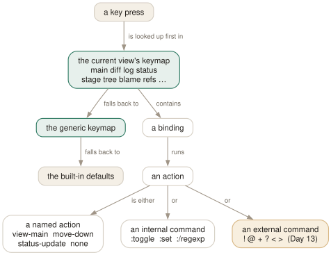

Day 12
Bindings and keymaps
Key resolution runs view, then generic, then built-in.
By the end of today you can
- bind a key in one view without disturbing it everywhere else
- name any key tig can see, including control and escape combinations
- read the error tig gives for a mistyped action name, which does not mention actions
One line, three parts
Every key tig responds to — including all of the ones you have learned — is a line of configuration in exactly this shape. There is no privileged built-in layer: the defaults are written in the same language you are about to use.
bind <keymap> <key> <action>
bind main C ?git cherry-pick %(commit) # a real default
bind diff ] :toggle diff-context +1 # another
bind generic h view-help # and another
Prove it to yourself with :save-options /tmp/v: the second half of that file is every binding tig currently has, written as bind lines you could paste into your own config.

generic binding only applies where the view has not claimed the key. And an action is one of exactly three things; anything that is not a known action name is assumed to be a command, which is why a typo produces an error about flags.Keymaps, and the order that decides who wins
There are fifteen keymaps: one per view — main, diff, log, reflog, help, pager, status, stage, tree, blob, blame, refs, stash, grep — plus generic, which applies everywhere. There is also search, for keys that work while the search prompt is open.
A key press is resolved in this order, and the first match wins:
- The current view's keymap.
- The
generickeymap. - The built-in defaults.
This is exactly why Day 2's F key behaves differently in different views. tig ships bind generic F :toggle file-name and also bind main F :toggle commit-title-refs, so in the main view you get the refs toggle and everywhere else the file-name one. tigmanual(7) documents only the first behaviour, which is why it appears to be wrong.
Naming keys
Key values are never quoted. An ordinary character stands for itself — including multi-byte UTF-8 ones, so bind generic ø … is legal. Everything else has a symbolic name in angle brackets, case-insensitively:
<Enter> <Space> <Backspace> <Tab> <Escape>/<Esc>
<Left> <Right> <Up> <Down> <Home> <End>
<Insert>/<Ins> <Delete>/<Del> <PageUp>/<PgUp> <PageDown>/<PgDown>
<ScrollBack>/<SBack> <ScrollFwd>/<SFwd>
<ShiftTab>/<BackTab> <ShiftLeft> <ShiftRight> <ShiftDelete> <ShiftHome> <ShiftEnd>
<SingleQuote> <DoubleQuote> <F1> … <F19>
<Hash> the # key — # starts a comment, so it needs a name
<LessThan> the < key, also spelled <LT>
<Ctrl-f> control combinations
<Esc>o escape followed by a key
One more boundary: keys at the line-entry prompt are readline's, not tig's, and are configured in ~/.inputrc. tig honours an $if tig section there but does not require one.
Actions: three kinds
The third field is one of exactly three things, and tig tries them in this order:
- A named action
view-main,move-down,status-update,none. Names are case-insensitive and-,_and.are interchangeable, soview-mainandView.Mainare the same.- An internal command
- Anything starting with
:— the Day 5 prompt commands.:toggle,:set,:source, and searches like:/^@@. - An external command
- Anything starting with
!,@,+,?,<or>. Tomorrow's lesson entirely.
The named actions are grouped much as this course has been: view switching (view-main and friends), view manipulation (enter, back, next, parent, maximize, view-close, quit), the staging actions from Day 6, cursor movement, scrolling, search, and a handful of miscellaneous ones (edit, prompt, options, screen-redraw, stop-loading, show-version, none).
Making the config cheap to change
The first binding to add is the one that makes every other binding easy to try:
bind generic <Ctrl-r> :source ~/.tigrc
Now the loop is: edit the file in one window, press C-r in tig, see the result. No restarting, no losing your place. This was tested rather than assumed — binding a key, changing the sourced file, pressing the reload key and pressing the changed key does run the new binding.
Today's habit
For the rest of the week, keep ~/.tigrc open in a window. When you type the same thing at the : prompt twice in one day, bind it and press C-r. The three blocks below are the ones this course has earned; the rest should be yours.
Tomorrow: bindings that run real commands, with your browsing state substituted in.
New vocabulary
Keys
| Key | Does |
|---|---|
| C-r | Reload ~/.tigrc — once you bind it, as today's config does. |
Commands
| Command | Does |
|---|---|
bind <keymap> <key> <action> | The whole syntax. |
bind generic <key> none | Unbind a key everywhere at once. |
:source ~/.tigrc | Re-read the config without restarting. |
Today's configappend to ~/.tigrc
Reload this file without restarting. Bind it first and everything else in the config becomes cheap to experiment with: edit, press Ctrl-r, see the result.
bind generic <Ctrl-r> :source ~/.tigrc
In the diff view, make the arrow keys scroll the patch instead of moving to the next commit in the parent view. Keep J and K for walking commits; this is the split tigmanual itself suggests, and it stops long patches jumping out from under you.
bind diff <Down> scroll-line-down
bind diff <Up> scroll-line-up
Step file by file through a large commit, the way @ steps chunk by chunk. Both are ordinary searches, so n repeats whichever you used last.
bind diff F :/^diff --(git|cc)
tig reads this only at startup. Reload without quitting by binding :source ~/.tigrc to a key (Day 12), or check it with tig 2>&1 | head — errors arrive as tig warning: lines before the first view draws.
Drillsdo these in a real terminal, today
Self-check
Answer out loud first, then unfold.
You write bind main x view-mian and tig says Unknown command flag 'v'; expected one of :!?@<+>. Why does a typo in an action name produce an error about flags?
Because tig tries the action names first, and when nothing matches it assumes you meant a command rather than an action. Commands must begin with one of the flag characters — : for internal, !@+?<> for external — and view-mian begins with v, so that is what it complains about.
Read it as “that is not an action name I know”. The same error appears for every misspelling, so once you have seen it once it is diagnostic rather than confusing.
You bind bind generic F :toggle file-name's replacement, but in the main view your new binding is ignored while F keeps toggling refs. What is happening?
The main keymap has its own F, and view keymaps win. Resolution order is: the current view's keymap, then generic, then the built-in defaults — and tig ships bind main F :toggle commit-title-refs out of the box.
So a generic binding only applies where the view has not claimed the key. To take it back you must bind it in the specific keymap too: bind main F :toggle file-name. This is verifiable in a few seconds — bind the same key in both keymaps to commands that write to different files and see which one runs.
What does bind generic Q none do, and how is it different from simply not binding Q?
none is a real action meaning “do nothing”, and binding it in the generic keymap clears the key from all keymaps at once. Not binding a key leaves the built-in default in place; binding none actively removes it.
This is how you disable a default you keep hitting by accident. The canonical example in tigrc(5) is disabling a key that runs something destructive — worth doing for ! in the refs view if you have ever force-deleted the wrong branch.
You want to bind C-m and it does not work. Which other keys are unavailable, and why?
Ctrl-m and Ctrl-i cannot be bound, because at the terminal level they are indistinguishable from Enter and Tab — the same bytes arrive. tig reads keys through ncurses and inherits that limitation.
Three more to know: case is not distinguishable in control sequences, so Ctrl-f and Ctrl-F are one key; Ctrl-z is taken by job control and suspends tig; and Ctrl-Space usually arrives as Ctrl-@, which is bindable. Beyond that, whether a symbolic key like <ShiftTab> arrives at all depends on your terminal emulator.
Cheat sheet
Bindings. Resolution is view, then generic, then built-in — first match wins.
bind <keymap> <key> <action>
keymaps main diff log reflog help pager status stage tree blob
blame refs stash grep + generic (everywhere) + search
keys a <Enter> <Tab> <Esc> <Up> <Hash> <LessThan> <Ctrl-f> <Esc>o <F5>
actions a name (view-main, move-down, none)
:internal (:toggle, :set, :source, :/regexp)
!@+?<> external (tomorrow)
bind generic <key> none # unbind everywhere at once
bind generic <Ctrl-r> :source ~/.tigrc # bind this FIRST
# 'Unknown command flag' really means 'no such action name'
Everything through Day 12
Keys
| Key | Does |
|---|---|
| m | Open the main view — the one-line-per-commit list. |
| d | Open the diff view for the selected commit. |
| s | Open the status view: the working tree. S does the same. |
| h | Open the help view: every binding that is live right now. |
| q | Close this view and fall back to the one underneath. Quits if it is the last. |
| Q | Quit immediately, however deep the stack. |
| R | Reload the current view by re-running its git command. |
| v | Show the version — and prove which build you are on. |
| z | Stop all background loading. For when you opened a 200,000-commit history. |
| D | Cycle the date column: default, relative, compact, custom, hidden. |
| A | Cycle the author column: full, abbreviated, email, user, hidden. |
| X | Show or hide the abbreviated commit ID column. |
| G | Cycle the graph in the main view: v2, v1, off. |
| F | In the main view, show or hide the ref labels. |
| # | Show or hide line numbers. |
| ~ | Switch the line graphics between ASCII and the drawing characters. |
| o | Open the option menu: the same toggles, with their current values. |
| jk | Move the cursor down and up. Arrow keys work too, with a caveat on Day 3. |
| Enter | Open the selected line. From the main view, splits and shows the diff. |
| Tab | Move focus to the other view in a split. |
| UpDown | Move to the previous/next entry — in the parent view, even from the child. |
| JK | Same as the arrow keys: next and previous entry. |
| O | Maximise the focused view to fill the display. |
| < | Go back to the previous view state. |
| , | Move to the parent: the parent directory, or the parent commit. |
| Space- | Page down and page up. |
| C-dC-u | Half a page down and up. |
| ] | Increase the diff context by one line. |
| [ | Decrease the diff context by one line. |
| @ | Jump to the next chunk header. Implemented as a search — see today's gotcha. |
| % | Toggle the file filter: show the whole commit, not just the file you came from. |
| W | Toggle whitespace-insensitive diffing. |
| $ | Highlight commit-title text past the conventional width. |
| / | Search forwards. Prompts for a regexp. |
| ? | Search backwards. |
| n | Next match. N for the previous one. |
| : | Open the prompt. |
| H | Jump to the HEAD commit, in the main view. |
| u | Stage or unstage: the file in the status view, the chunk in the stage view. |
| 1 | Stage or unstage the single line under the cursor. |
| 2 | Stage or unstage part of a chunk: from here to the end of it. |
| \ | Split the current chunk into smaller chunks. |
| ! | Revert: throw away the chunk or file under the cursor. Prompts first. |
| M | Resolve an unmerged file with git mergetool. |
| C | Commit. Runs git commit in the foreground, in the status view. |
| t | Open the tree view at the current revision. |
| f | Open the blob view: the contents of the selected file. |
| b | Open the blame view for the selected file. |
| e | Open the file in your editor, at the line under the cursor. |
| r | Refs view: branches, remotes and tags. |
| y | Stash view: the stash stack. |
| L | Reflog view: where HEAD has been. |
| g | Grep view: search file contents. |
| C(refs,reflog) | Check out the branch under the cursor. Prompts first. |
| !(refs,stash,reflog) | Delete the branch, drop the stash, or reset --hard. All prompt first. |
| A(stash) | Apply the selected stash, keeping the entry. |
| P(stash) | Pop it: apply and remove the entry. |
| C-r | Reload ~/.tigrc — once you bind it, as today's config does. |
Commands
| Command | Does |
|---|---|
tig | Open the main view for the current branch. |
tig status | Start in the status view instead. |
tig -C <path> | Run as if started in path. |
tig -v | Print the version and exit. Also reveals the optional features built in. |
tig show <rev> | Open a commit directly in the diff view. |
tig --word-diff=plain | Word-level rather than line-level diffing. |
:42 | Jump to line 42 of this view. |
:2f12bcc | Jump to that commit. |
:goto <rev> | Jump to a revision: a branch, a tag, HEAD~3, %(commit)^2. |
:!git <cmd> | Run a git command and show the output in the pager view. |
:edit | Run an action by name. Any action name works here. |
:q | Run the binding for a key. Same as pressing q. |
:echo <text> | Print a line in the status window. |
:save-display <file> | Write the current screen to a file. |
:set <name> = <value> | Change a setting for this session. |
:toggle <name> | Cycle a setting. :toggle diff-context +3 steps by three. |
:source <file> | Read a config file now. Later lines win over earlier ones. |
:save-options <file> | Write every current setting and binding to a file. |
tig blame <file> | Start in the blame view for a file. |
tig blame <rev> -- <file> | Blame the file as it was at that revision. |
tig blame -C <file> | Blame with copy detection for one run. |
tig show <rev>:<path> | Show a file's contents at a revision. |
tig refs | Start in the refs view. |
tig stash | Start in the stash view. |
tig reflog | Start in the reflog view. |
tig grep <pattern> | Start in the grep view. Takes git grep options. |
tig refs --branches | Limit the refs view to branches. |
tig <rev> | Start the main view at a revision instead of HEAD. |
tig a..b | Commits reachable from b but not a. |
tig b ^a | The same thing, written as a negation. |
tig --all | Every ref, as if all of refs/ were on the command line. |
tig -- <path> | Only commits touching that path. -- ends option parsing. |
tig -n20 --since=1.month | Limit by count and by date. |
tig +42 | Open with line 42 selected. |
git log -p | tig | Pager mode: colourise and navigate any git output. |
tig --stdin | Read a list of commit IDs from stdin. |
:toggle author-display | Cycle a column's display option from the prompt. |
:toggle commit-title-graph | Cycle a non-display column option. |
bind <keymap> <key> <action> | The whole syntax. |
bind generic <key> none | Unbind a key everywhere at once. |
:source ~/.tigrc | Re-read the config without restarting. |
Options
| Option | Does |
|---|---|
show-changes | Whether the working-tree rows appear at all. Default yes. |
show-untracked | Whether the untracked row appears. Default yes. |
reference-format | How refs are wrapped. Default [branch] {remote} <tag> ~replace~. |
split-view-height | Height of the bottom view in a stacked split. Default 67%. |
split-view-width | Width of the right-hand view in a side-by-side split. Default 50%. |
vertical-split | Stacked or side by side. Default auto. |
focus-child | Whether opening a child view moves the focus into it. Default yes. |
diff-context | Context lines around each change. Default 3. |
diff-options | Extra options for the diff view's git show. |
ignore-space | Whitespace handling: no (default), all, some, at-eol. |
diff-highlight | Run git's diff-highlight to mark intra-line changes. Off by default. |
diff-indicator | Show the leading +/- signs. Default yes. |
ignore-case | Search case handling: no (default), yes, smart-case. |
wrap-search | Wrap around the ends of the view. Default yes. |
history-size | Lines kept in ~/.tig_history. Default 500, 0 disables. |
status-show-untracked-files | Show untracked files. Default yes. |
status-show-untracked-dirs | Show the contents of untracked directories. Default yes. |
mailmap | Apply .mailmap. Default yes, whatever tigrc(5) says. |
blame-options | Default options for git blame. Empty by default. |
recurse-tree | Show every file recursively in the tree view. Default no. |
editor-line-number | Pass +<line> to the editor. Default yes. |
grep-view | Columns of the grep view. Adding file-name gives the git grep shape. |
main-options | Default options for the main view's git log. |
log-options | Default options for the log view. Default --cc --stat. |
main-view | Column list for the main view. reflog-view, refs-view and the rest follow the same shape. |
main-view-date | Shorthand: the date column of the main view alone. |
main-view-date-format | A strftime string, when the display mode is custom. |
main-view-id | Shorthand: show the commit ID column in the main view. |
tree-view-file-size | Shorthand: how the tree view shows sizes. |